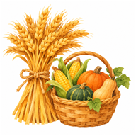
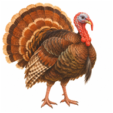
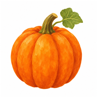
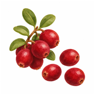
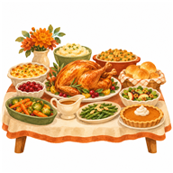

感恩节英语｜10个单词，把感谢说出来
感恩节，适合认识一种节日文化，也适合学着把感谢说具体。和孩子一起听一听、读一读这10个词吧。
日期怎么算？
美国感恩节定在每年11月的第四个星期四。计算时，找到11月的第一个星期四，再加21天即可，因此日期总在11月22日至28日之间。2026年是11月26日[1]。
Where did Thanksgiving come from?
In the autumn of 1621, English settlers at Plymouth and Wampanoag people shared a harvest celebration. This gathering later became part of the story of Thanksgiving[2].
The national holiday developed over time. Abraham Lincoln proclaimed a national day of thanksgiving in 1863. In 1941, a law fixed the holiday on the fourth Thursday of November[4]. For some Native people, the day is also a time for mourning and remembrance[5].
中文参考 1621年秋，普利茅斯的英国殖民者与万帕诺亚格原住民共同庆祝丰收，这次聚会后来成为感恩节故事的一部分。全国性节日则逐步形成：1863年林肯宣布全国感恩日，1941年的法律固定了日期。对一些原住民而言，这一天也是悼念与追思之日。
从亲历者的书信读起
our harvest being gotten in, our governor sent four men on fowling, that so we might after a special manner rejoice together …
收成入仓后，总督派出四人猎鸟，好让我们以一种特别的方式共同庆祝。
Edward Winslow, “A Letter Sent from New England,” 收于 Mourt’s Relation（伦敦，1622年），第61页。采用博物馆提供的现代拼写版本，节选22词[2][3]。
以上两段英文为据史料编写的简述，并非书中原文。书信摘录仅呈现殖民者视角。
节日与餐桌
Thanksgiving
/ˌθæŋksˈɡɪvɪŋ/
感恩节
开头的 /θ/ 要轻轻送气，别读成 /s/。
发音：Thanksgiving
【在此插入音频：01-thanksgiving.wav】

harvest/ˈhɑːrvɪst/
收获；丰收
从秋日丰收，想到一年里的成长与收获。
发音：harvest
【在此插入音频：02-harvest.wav】

turkey/ˈtɝːki/
火鸡
美国感恩节餐桌上的代表性食物。
发音：turkey
【在此插入音频：03-turkey.wav】

pumpkin/ˈpʌmpkɪn/
南瓜
做成南瓜派，是常见的节日甜点。
发音：pumpkin
【在此插入音频：04-pumpkin.wav】

cranberry/ˈkrænberi/
蔓越莓
酸甜的蔓越莓酱，常用来搭配火鸡。
发音：cranberry
【在此插入音频：05-cranberry.wav】

feast/fiːst/
盛宴
形容一顿丰盛的大餐。
发音：feast
【在此插入音频：06-feast.wav】
把感谢说出来
thankful
/ˈθæŋkfəl/
感激的；心怀感谢的
想到值得感谢的人和事，就可以用上它。
发音：thankful
【在此插入音频：07-thankful.wav】
grateful
/ˈɡreɪtfəl/
感激的
常用来表达对他人帮助的感谢。
发音：grateful
【在此插入音频：08-grateful.wav】
gratitude
/ˈɡrætətuːd/
感激之情；感恩
这是名词；前面两个词是形容词。
发音：gratitude
【在此插入音频：09-gratitude.wav】
bless
/bles/
祝福；保佑（动词）
为他人祈愿平安与幸福。
发音：bless
【在此插入音频：10-bless.wav】
学会两句祝福与感谢
整句音标是便于跟读的参考读法，实际语流中会有弱读和连读。
Happy Thanksgiving!
/ˈhæpi ˌθæŋksˈɡɪvɪŋ/
感恩节快乐！
发音：Happy Thanksgiving!
【在此插入音频：11-happy-thanksgiving.wav】
I'm grateful for your help.
/aɪm ˈɡreɪtfəl fər jʊr help/
谢谢你的帮助。
发音：I'm grateful for your help.
【在此插入音频：12-i-m-grateful-for-your-help.wav】
说一句具体的感谢
今天，试着说一句具体的感谢：“谢谢你听我说完”“谢谢你今天帮了我”。你最想把这句话送给谁？
词汇释义及读音参考剑桥词典[6]。 美式英语音频由 Microsoft Zira 合成；封面与词汇插画为AI生成。
参考文献
[1] U.S. Office of Personnel Management. Federal Holidays: 2026 Holiday Schedule.
https://www.opm.gov/policy-data-oversight/pay-leave/federal-holidays/
[2] Edward Winslow. “A Letter Sent from New England.” In Mourt’s Relation. London, 1622, p. 61. 现代拼写转录见 Pilgrim Hall Museum, The “First Thanksgiving”.
https://www.pilgrimhall.org/thanksgiving-national-day-of-mourning/the-first-thanksgiving/
[3] Susan Hardman Moore. The Evolution of Thanksgiving. Yale University Press, November 27, 2014. 书目脚注[i]注明上述书信的版本与页码。
https://yalebooks.yale.edu/2014/11/27/the-evolution-of-thanksgiving/
[4] U.S. National Archives. Congress Establishes Thanksgiving.
https://www.archives.gov/legislative/features/thanksgiving
[5] National Museum of the American Indian, Smithsonian Institution. The “First Thanksgiving”: How Can We Tell a Better Story?
https://americanindian.si.edu/nk360/thanksgiving/
[6] Cambridge University Press. Cambridge Dictionary. 单词释义及美式读音参考。
https://dictionary.cambridge.org/